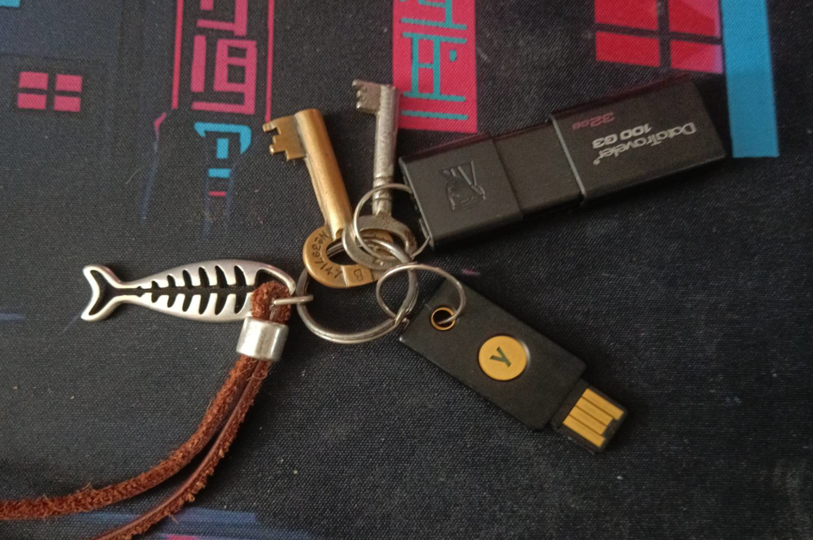

Home, Archive, Videos, Links, Contact
For a while now, I have wanted to own a Yubikey, but the price has always held me back since they cost a lot of money. After scouring ebay for a while, I finally found a good deal on one. I bought it, and now I’ve had the chance to mess around with it.

So far, I have been relatively happy with the Yubikey, but there is one concern I have: a lot of the firmware on the Yubikey is closed source, meaning someone like me cannot read the source code. While this may sound like something small to most, and I might seem overly cautious, but all I will say is how can you fully trust a product and its functionality if you can't see what it’s doing? Due to the Yubikey having closed source components, I have looked for some FOSS alternatives. Below, I have listed some of these products below:
There are two on that list that I am particually interested in, that being TKey and Nitrokey, this is because they are both well delevoped and have ways to set up with SSH so I can connect to servers way more securely, they also provide keys that have NFC so I can use it with my phone which is a big save.
So far the only thing I have really done with my Yubikey is set it up with KeepassXC, for some reason I cannot get my Google account working with it, and this is because I am under Linux, so I might need to install Windows or ChromeOS in a virtual machine and set it up, but even if then, I just have to hope it will still work on Linux because if not, well, that would be ass.
That is all I am going to look more into hardware keys because well they are awesome, but that is all thank you for reading!